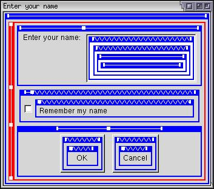

Features of a Window
We've already seen some features of windows. We'll look at some more in this section.
Creating Another Window
You can create a second window for your application in the same manner as you would create the first one. Just create a second XUL file with the window code in it. As in HTML, you can use the window.open function to open the second window. This function will return a reference to the newly opened window. You can use this reference to call functions of the other window.
The open function takes three arguments. The first is the URL of the file you wish to open. The second is an internal name of the window. The third is a list of display flags. The flag 'chrome' is important to open the window as a chrome file. If you do not add the 'chrome' flag, the file will open up as the content in a browser window.
For example:
window.open("chrome://findfile/content/findfile.xul","findfile","chrome");Specifying the Width and Height
You should have noticed that whenever elements were added to a window, the window's width expanded to fit the new elements. The window is really just a box which is flexible and defaults to vertical orientation. You can also specify the width and height directly on the window tag. This, of course, causes the window to be displayed in a specific size. If you leave it out, the size is determined by the elements that are in it.
<window id="findfile-window" title="Find Files" width="400" height="450" xmlns="http://www.mozilla.org/keymaster/gatekeeper/there.is.only.xul">
In this example, the window will open with a width of 400 pixels and a height of 450 pixels. Even if there aren't enough elements to fit this size, the window will still open at this size and there will be blank space in the remaining area. If there are too many elements, the window will not be large enough to fit the elements. The user will have to resize the dialog. You have to be careful when specifying a width and height that the window is not too small or too big.
Note that you must specify both the width and the height. If you only specify one, the other will be set to 0. To have the window set its size automatically, leave both the width and height out.
The width and height only specify the initial size of the window. The user may still resize the window to another size, assuming that the window is resizable.
Other Window Features
The flags below can be passed as part of the third argument to the window.open function. Your operating system may not support all of them. You can also use any of the pre-existing flags, which you should find in a JavaScript reference. You may disable a feature by setting it to 'no', for example 'dialog=no'.
- alwaysLowered
The window will always appear behind other windows. - alwaysRaised
The window will always appear above other windows. - centerscreen
The window will be centered on the screen when it is opened. - dependent
The window will always appear relative to the window that opened it. If the window that opened the new window is moved, the new window is moved relative to it. - dialog
The window is a dialog box, which may appear differently. - modal
The dialog is modal. The window that opened the modal window can't be interacted with until the modal window is closed. - resizable
The user can resize the window.
Debugging a Window
Another feature that is useful only during development is to enable the debugging mode of a window. To do this, add a debug attribute to the window and set it to true. This will cause the window to display the boxes and spacer so you can see what is happening. The example below shows how to use it.
<window id="findfile-window" title="Find Files" debug="true" xmlns:html="http://www.w3.org/1999/xhtml" xmlns="http://www.mozilla.org/keymaster/gatekeeper/there.is.only.xul">
The image below shows the effect when applied to a simple window.

- Blue boxes indicate horizontal boxes.
- Red boxes indicate vertical boxes. You can see that the entire window is also a vertical box.
- Zigzags show where there are flexible elements. In this case, the spacer is flexible so a zigzag appears above it.
- Lines show where inflexible elements are, in this case the text, the input field and the buttons.
- White square boxes indicate the edges of elements.
In the image, you might notice a number of additional boxes in place. This is because each XUL element is made up of a number of boxes itself, defined with XBL. You can normally ignore these. You can specify the debug attribute on any box, not just on a window.
(Next) Next, we'll look at how to open secondary dialogs.